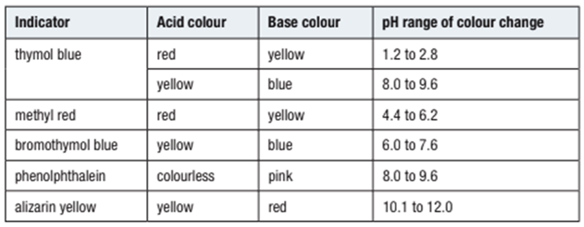
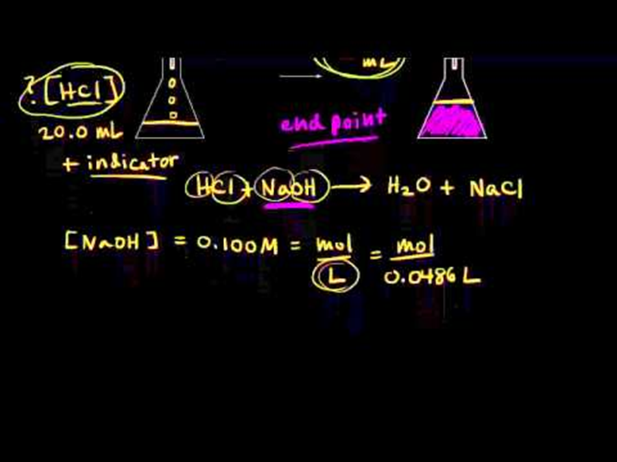
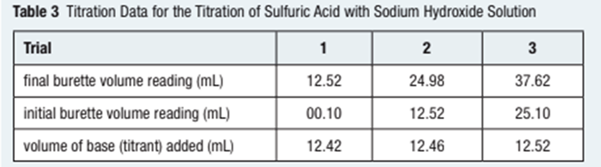

Acid–base indicators do not change colour at a specific pH value. Rather, we can observe the colour changes over a small pH range.
|  |
The Titration Procedure
|  |
Titrations require standard solutions. A primary standard is a chemical that is highly pure and chemically stable. It should react completely and almost instantaneously and should ideally have a large molecular mass.
Several 10.00 mL samples of sulfuric acid solution of unknown concentration are titrated with a 0.100 mol/L solution of sodium hydroxide. (Note that the burette contains the sodium hydroxide solution.) The endpoint was determined using phenolphthalein indicator. The acceptable observations from the titration are summarized in Table 3.
|  |